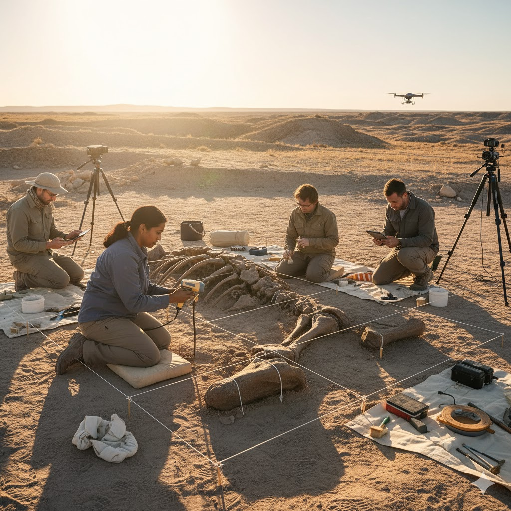
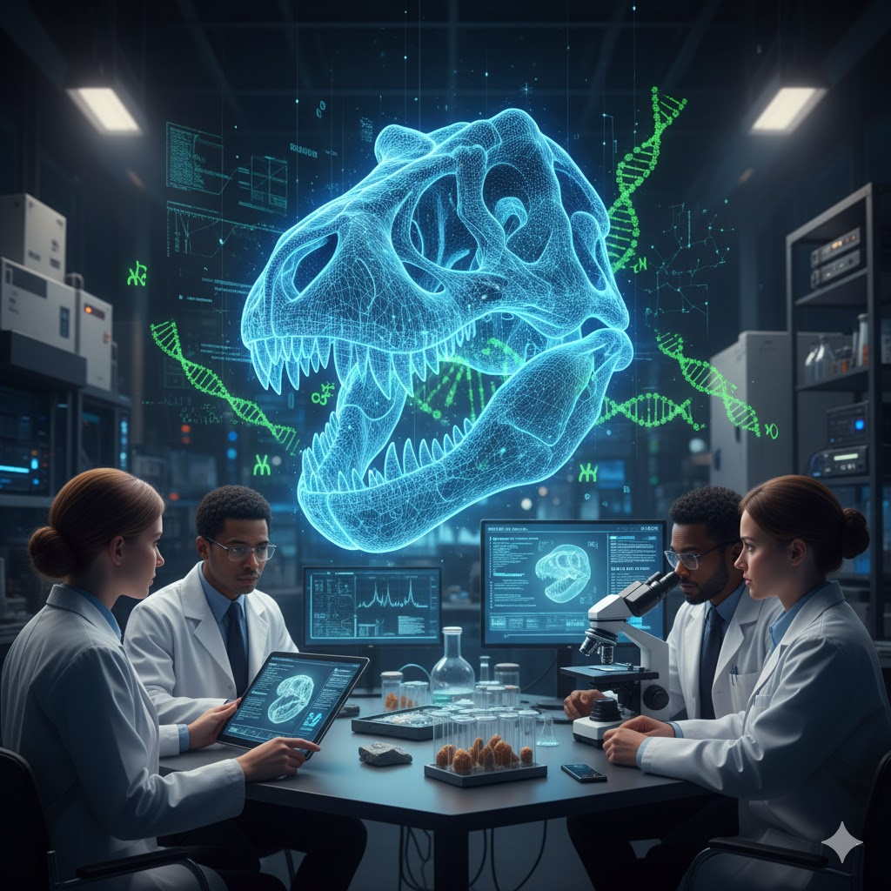
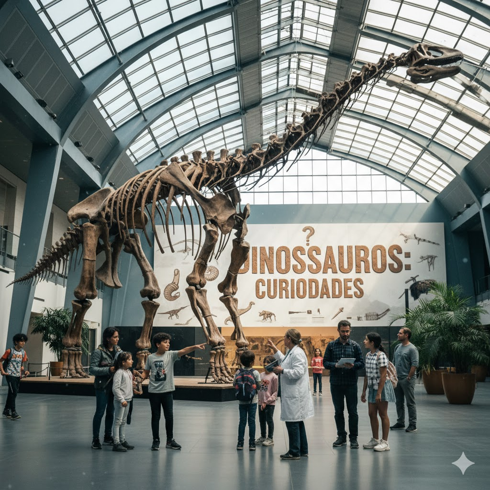
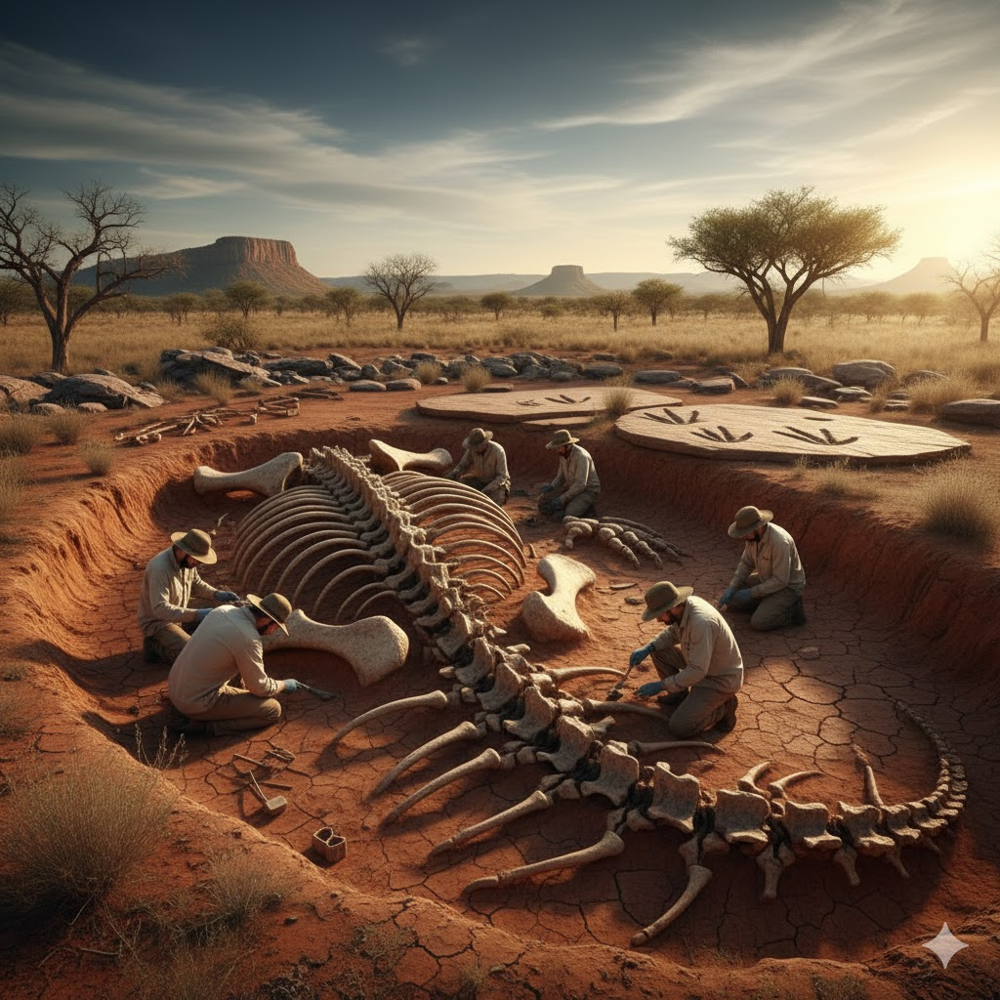
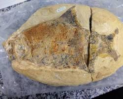
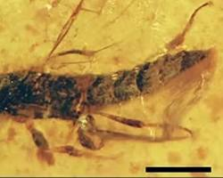

contato@paleoestudos.com
Museu Nacional de Paleontologia, Brasil
DINOMENTES
Início
Curiosidades
Paleontologia
Extinção
🦕 Explore Mais
Paleontologia
A Paleontologia Hoje
Mostrar Tudo
Escavações
Tecnologias
Museus
Fósseis

Escavações Modernas
Como é feita uma escavação hoje
Escavações paleontológicas utilizam técnicas delicadas e precisão científica para proteger fósseis frágeis.
Ferramentas:
Pincéis, espátulas e drones
Etapas:
Mapeamento, registro e escavação
Objetivo:
Preservar o contexto do fóssil

Tecnologia na Paleontologia
Inovações Científicas
Impressão 3D, scanners a laser e análises de DNA estão revolucionando o estudo dos fósseis.
Impressão 3D:
Réplica de fósseis
Scanner:
Mapeamento digital
DNA Antigo:
Relações evolutivas

Museus e Pesquisas
O papel do Brasil na paleontologia
Museus e universidades brasileiras lideram descobertas e preservação de fósseis no mundo.
Principais locais:
Museu Nacional, Araripe e Cariri
Foco:
Educação e pesquisa científica
Importância:
Preservação da história natural

Descobertas Brasileiras
O dinossauro do sertão
Pesquisadores encontraram fósseis únicos no Ceará, revelando novas espécies de dinossauros do período Cretáceo.
Local:
Bacia do Araripe
Espécie:
Aratasaurus museunacionali
Idade:
~115 milhões de anos

Fósseis Marinhos
Vida nos antigos oceanos
Moluscos e peixes fossilizados ajudam cientistas a entender como os mares mudaram ao longo dos milênios.
Ambiente:
Oceano pré-histórico
Conservação:
Rochas calcárias
Descobertas:
Carapaças e escamas fossilizadas

Fósseis em Âmbar
O tempo cristalizado
Insetos e plantas preservados em âmbar revelam detalhes impressionantes da vida pré-histórica.
Material:
Resina fossilizada
Preservação:
DNA e tecidos
Relevância:
Estudo da evolução de insetos
1
2
3